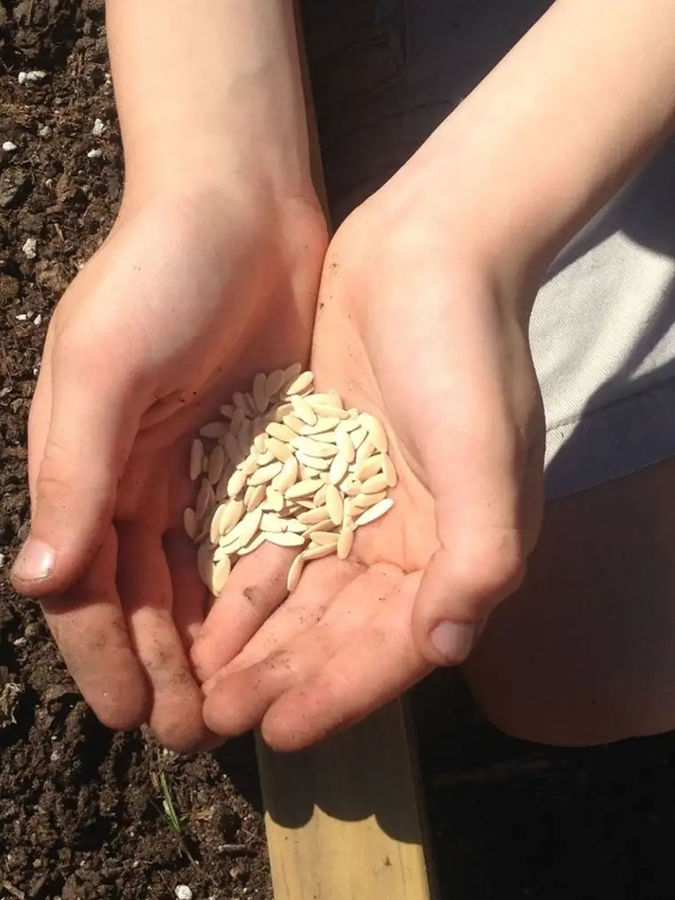
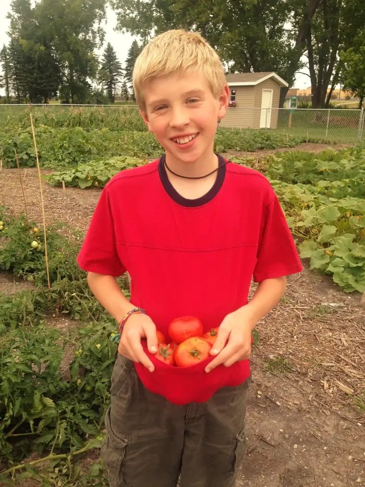

FARGO — In May 2015, Lauren Knoll, then 13, listened with rapt attention as “Good Morning America” anchor Robin Roberts shared her story with the 100-plus other young volunteers who’d gathered in Washington, D.C.
Roberts, who has faced both breast cancer and a blood disorder called myelodysplastic syndrome, encouraged the youngsters to not miss the chance, even in adversity, to serve others.
Previous Faith Conversation: Teen volunteer earns national honor
As she talked, Lauren’s heart lurched.
“She really inspired us to keep serving in our community,” Lauren says, noting that the other young people, many of whom had gone through difficulties of their own, also touched her.
“There were kids with cancer, and one who’d had his leg amputated,” she says, “and yet they were advocates in their own communities.”
After returning from the trip, where the volunteers each accepted a national Prudential Spirit of Community Award, Lauren sat down with her family to plot their next steps.
Though they’d been volunteering and fundraising for years, an intentional plan of action didn’t really exist, according to Lauren’s mother, Lori Knoll. “So we began looking for a way — a natural way that fit the kids’ interests — to do that.”
From there sprouted Seeds of Hope, a collective effort by the Knoll children to each choose a “seed” of service to focus on, and a plan to help it grow.
Lauren’s seed
Lauren’s seed sprang from her volunteer work at Churches United for the Homeless in Moorhead, where she and her family serve sloppy Joes every second Friday of the month.
She says she felt drawn to give those struggling something tangible and meaningful, “since some don’t even have a house to call their own.”
Researching Scripture passages about hope and faith, she found Luke 17:6: “With faith the size of a mustard seed you can move mountains.” She and her mom then found necklaces bearing a mustard seed and the verse, and bought 100 of them to give away.
Hope Camp, hosted each summer by their church on the White Earth Reservation, seemed a fitting place. At the end of camp, Lauren handed out the necklaces to each young participant.
“Every time I gave one, whether it was a boy or girl, they immediately took it out and put it on,” she says. “It was cool seeing how excited they were.”
Cameron’s seed
Cameron Knoll, 16, chose as his seed creating awareness, advocacy and fundraising for permanent housing for the homeless.
To follow through, Cameron donned his hard hat and joined a two-week study program at Minnesota State Community and Technical College to learn electrical, plumbing and other new-construction-related skills.
He also did a two-day “job shadow” at the shelter, penetrating the usual barriers for volunteers “to see where (the residents) live and what they do.”
What he witnessed — tight spaces and mattresses from overflow spread throughout — convinced Cameron that the shelter’s plans to provide more permanent housing deserves support.
With his siblings, Cameron has been giving presentations about Churches United’s permanent housing project, set to break ground in Moorhead soon, to local organizations and businesses to garner understanding and support.
He also was awarded the 2016 President’s Volunteer Service Award on behalf of President Barack Obama.
Evan’s seed

Evan Knoll, 11, was bestowed the 2016 Prudential Spirit of the Community of Award, which means another trip to D.C. for the Knolls.
He got there in part by watering his “seed” — planting and maintaining community gardens, and raising awareness for and encouraging healthier eating habits.
He assisted at Churches United’s “Bright Sky Garden” plot, Compassion House garden plot in Detroit Lakes, Minn., and grew tomato plants at home to bring to Hope Camp last summer.
Evan says it felt good to introduce something that can help combat obesity, diabetes and unhealthy teeth, so prevalent on the reservation, adding that the kids got to decorate and put stickers on their individual plants. “We also helped by teaching them to plant and water them.”
With his siblings and mother, Evan also shared produce he helped grow with neighbors of the forthcoming permanent-housing project.
“We want to let people know that (the homeless) are not much different than you and me, and you don’t have to be afraid,” Lori Knoll says. “These are families with children, and other individuals who have gone through an unfortunate time.”
The community ‘garden’
Lisa Lipari, program director for Churches United, says the Knoll kids have accomplished what most adults cannot.
“It’s typical for us to have up to a dozen school-aged kids living here,” Lipari says, “so when you consider another school-aged child sharing about (the reality of homelessness in our community) with others, it speaks volumes.”
Andrea DeMars, volunteer and donations coordinator at the shelter, says she was particularly inspired by the “seeds” idea, and enjoyed working with Cameron during his job-shadowing.
“I just think it’s wonderful to see a family come together and do service work together and enjoy it and have such a passion for it,” she says. “For the three kids to be involved, and each have their own ideas about things they want to do to help, it’s inspiring.”
Adam Neuerburg, ministry development assistant at Lakes Area Vineyard Church, who helps with Hope Camp annually, echoes the sentiments of youths empowering other youths.
“As adults we’ve often been raised to believe things about the reservation, but for the Knoll kids to step in with a fresh perspective and build relationships — to be able to break through those stereotypes and see two cultures unite and celebrate and enjoy one another’s differences — that’s a beautiful thing,” he said.
[For the sake of having a repository for my newspaper columns and articles, I reprint them here, with permission, a week after their run date. The preceding ran in The Forum newspaper on April 9, 2016.]